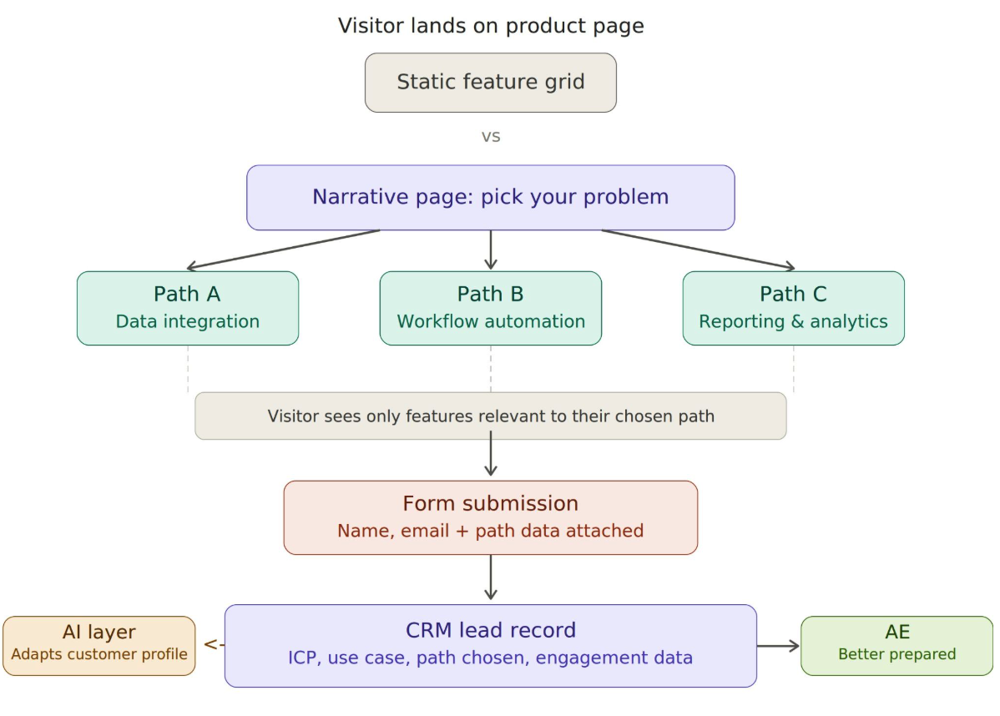

AI-enabled tools like Clay, Gong and ZoomInfo have genuinely augmented lead generation. Outbound is easier to launch, and research takes a fraction of the time it used to. Design output is faster…and yet there is a pipeline crisis?
The old SaaS 2010s playbook was straightforward: create decent gated content and get really, really good at distribution. Creative tools have been evolving for over a decade. Now with AI, everyone has access to a creative license with outputs to show for it. And access to distribution channels is easier than ever (and getting expensive).
Exit Five's newsletter had a great quote: Stop Creating Content. Start Creating Systems.
Especially with long-sales-cycle products, there is a meaningful gap between calling yourself "AI-first" in marketing and using AI to drive real impact if you don't create systems that redefine the space for AI-driven content creation.
Foundation: A shift to native AI GTM enablement
Building personalised marketing/GTM systems with an 'AI brain' from scratch is now free (almost). However, you also need a team that's well-balanced at building with AI and around AI.
First-party data will be the building block of the future, when teams move increasingly towards building internal AI-native GTM engines. Gemma 4's April 2026 release is making waves, since now teams can run models on local hardware. As tools, data and connecting infrastructure get better, we will see more of native AI engines built on first-party data.

For example, now, theoretically, you can build yourself and your team a Granola app for sales/internal calls. The audio never leaves the device, and you get great summaries.
Teams will race to build strategies and internal enablement tools, where AI genuinely accelerates productivity holistically: ideation to production to iteration. Good systems need fast iteration, cheap unit economics and data flowing back into the system, and that's exactly what a first-party AI brain gives you.
Once this foundation is in place, the next question is: what do you build on top of it?
I predict a new format kind of product content altogether.
Volitive Marketing: Storytelling meets user feedback
As the AI creative space improves, in parallel, we might be ready by the end of 2027 for a different kind of content strategy altogether, thanks to AI proliferation: interactive storytelling & gamified experiences driven by user feedback. I call it volitive marketing.
When the user actively chooses how to consume product awareness/education and build brand perception, turning their decisions into the brand's next move.
While interactive marketing is the overall umbrella term for anything two-way, volitive marketing is systemic world-building through content.
This is not as far-fetched as it sounds, and we already do it, but it is restricted to landing pages (think RoI calculators). However, tools don't evolve in isolation. They need creative use cases.
When Netflix released Black Mirror: Bandersnatch in 2018, it rewired what audiences expected from digital storytelling. The interactive film contained over 300 minutes of branching narrative material and won two Primetime Emmy Awards. It showed that audiences would spend real time making decisions inside a piece of content, as opposed to activity-passive viewing. Netflix later removed Bandersnatch and all its interactive specials by 2025, and shut down its Netflix Stories games franchise. But the company did not abandon interactivity itself.
Content experiences are bound to evolve with AI and reach sooner than we anticipate. Teams that move early get to shape a new playbook that is sitting on the horizon and up for grabs. That shift is worth thinking about for B2B PLG.
What this looks like
I decided to take an attempt at a new kind of playbook this weekend after a recent conversation I had with Reinhard De Milt, VP of Marketing at TechWolf. We briefly touched upon how a strong conviction and genuine product enthusiasm can translate into marketing campaigns. However, modern marketing can't make the error of brand & growth sitting in separate rooms. There needs to be a fusion of marketing disciplines to reinvent how to approach storytelling and build audiences.
Here are some examples:
Example 1Case Studies
Most enterprise case studies focus on success stories, typically hosted on HubSpot or similar marketing hubs. But with AI tools, ideation to prototype can not only happen rapidly (almost in an hour), but content pieces themselves can be reimagined. I always thought case studies deserve a better format.
Customers can choose how to read customer stories: through an interactive medium (useful during events/holidays), a downloadable PDF or as website content. Creating and deploying these is pretty easy, something that would previously have taken months or even quarters, if at all. Here, the user picks how to consume product awareness/education, while marketers get a firm understanding of the ICPs that interact, setting up better ABM strategies or even content distribution methods.
Example 2Narrative product pages
Instead of a static feature grid, imagine a product page where the visitor chooses/self-selects their own problem space, and the page adapts to show only what is relevant.

Most customer journeys today end with a form that captures name, email, company, and maybe job title. That is all the CRM gets. And perhaps a lot of enrichment signals post capture. If enrichment signals behaviour, user feedback confirms behaviour (sort of).
With a narrative product page, the visitor has already made choices before they hit the form. They picked a problem area, a use case, maybe a company size. If that flows into the CRM alongside the form, the lead record arrives with context already attached.
That changes two things:
- Customer data is richer: The AI personalisation layer finally has real behavioural input to work with for high-intent accounts. Follow-up emails, nurture sequences, and even the next visit to the product page can be adapted based on what the ICP already told you through their choices
- Product positioning gets sharper: PMMs know what path the prospect took before the call, so product discovery starts further in. This helps refine the product positioning for both AEO discoverability and sales conversations.
This is not personalisation in the way most marketers use the word. It is a structured narrative. A 'choose-your-own-path' experience that respects the buyer's time and intent.
Why volitive marketing is next on the horizon
There are several reasons I believe the next phase of B2B SaaS marketing will involve a fundamental shift to this dynamic, interactive content through real-time user feedback. My intuition is built on observing recent marketing trends and how AI is putting the brand at the centre of marketing. Thankfully, none of the reasons requires you to take my word for it!
- It helps brands stand out: In a market where every competitor's website looks like it was generated by the same prompt, differentiation matters. Interactive experiences create memorable first impressions that static pages simply cannot match
- Content sticks: People still look for strong content, but they also want engaging content. More and more whitepapers and benchmark reports are starting to sound identical: same tone, same structure, same conclusions. Good, distinctive content stands out in multiple ways when the format itself is part of the message
- Distribution is expensive, and ROI is not always clear: PR, influencers, events and LinkedIn are all valid channels, and pretty expensive at scale. At some point, organic content will be back as first-party content + socials, but the underlying principles will be the same
- AI Agents will handle discoverability. But users will still make the purchase decision: AI-powered discoverability through LLMs and agents is changing how products are found. But moving from awareness to first purchase still requires a human in the loop today. Whether you call it [top-of-funnel to customer] or [awareness to revenue], the gap between being found and being chosen is where interactive content can live
- Creativity is the fastest path to showing AI's value: AI's core value is that it makes teams more productive by compressing resource, analysis and generation time. Creative formats that were previously too expensive or too slow to produce are now viable. Interactive content will be one of the clearest beneficiaries
Side Note: Terence Tao, one of the most famous mathematicians of our generation, has expressed some sentiments around creativity, AI & math here. I found it pretty interesting.
A few questions the reader might have in mind:
Q1: Why would buyers not be directly told if the product fits, rather than click through choices for education?
Mostly, they should be. Volitive marketing works when the choice is a shortcut. For example, comparing "workflow automation" tools should mean the buyer skips scrolls of irrelevant features, not do unpaid segmentation work for your CRM.
Q2: Interactive content doesn't compound like events or blogs. Isn't that a problem?
Currently it is, and pretending otherwise would be dishonest. But the blog-post flywheel is already cracking. AI overviews and LLM-first discovery are eroding the backlink-and-traffic model that made content marketing defensible a decade ago. The more useful metric now is cost per qualified conversation, not cost per visit.
Volitive assets can compound, just differently. The main issue is probably maintenance. They need to be owned like a product and not manufactured as content.
Q3: Sales teams already complain about form data. Why would path data be any better?
It isn't more accurate. It's a different signal. Form data captures identity, enrichment captures context, path data captures intent, and intent is what AEs currently spend the first ten minutes of discovery trying to establish.
With tools like Lovable, Claude Code, Claude Design and the growing ecosystem of AI-powered prototyping, it will not be long before we see an evolved form of content that blurs the line between marketing and product experience.
Thoughts welcome.